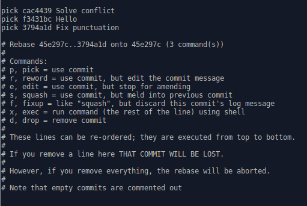

git rebase
Katakanlah ada team developer yang sedang membuat website design.
Seorang developer sedang design dalam branch a. Seorang lagi developer telah
menyiapkan design dalam branch b dan telahpun merge ke master. Maka, branch
a telah ketinggalan. Bagi seorang designer, mereka perlu melihat design yang
terkini supaya design mereka sesuai. Jadi, dalam kes ini, designer branch a
perlu update branch supaya sama dengan branch master.
Kita boleh update branch menggunakan cara yang lepas, iaitu dengan menggunakan
git pull. Jadi, designer tersebut boleh menggunakan,
git pull origin master
pada branchnya untuk update. Cara ini tiada salahnya, tetapi message yang menyatakan kita pull akan termasuk sekali ke dalam branch kita.
Ada sesetengah team yang tidak suka sejarah commit berserabut. Bagi mengelakkan
message git pull termasuk sekali, designer tersebut boleh menggunakan git
rebase. Caranya,
git rebase master
Pastikan branch master di komputer sama dengan remote menggunakan
git pull origin master.
git rebase -i
Dengan menambah flag --interactive atau -i selepas git rebase, kita boleh
membuat beberapa operasi pada commit yang ada dalam branch.
Selepas menulis command tersebut, text editor akan terbuka dengan senarai commit berserta arahan. Rupanya begini:

Katakanlah kita mahu menukar message untuk commit 'Hello' di atas, kita edit command menjadi seperti berikut:
pick cac4439 Solve conflict
reword f3431bc Hello
pick 3794a1d Fix punctuation
Setelah save, text editor sekali lagi terbuka supaya kita boleh edit message untuk commit yang kita pilih.